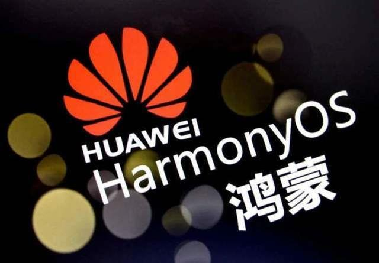
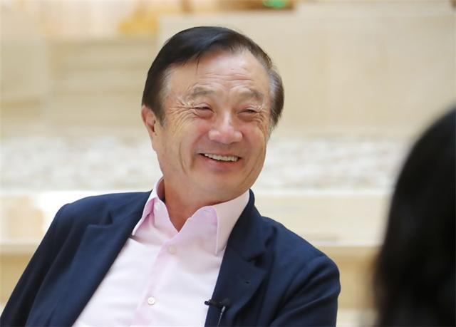
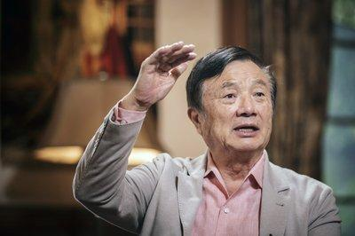
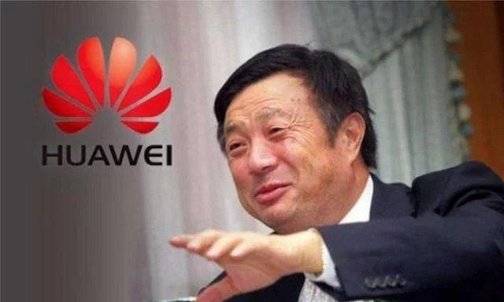
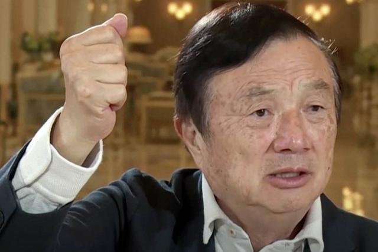

鸿蒙上市遭反转？任正非的深谋远虑，是华为
高级的生存之道！
操作系统是智能电子消费的软件基石，全球真正实现大规模普及的操作系统屈指可
数，而操作系统市场一直被美国掌握在手中，其中谷歌的安卓系统和苹果公司的
IOS系统占据全球近100%的手机操作系统份额。
除此之外，就再也没有出现过第三大手机操作系统了。
在全球也有很多企业参与了操作系统的研发，但无一例外地都失败了，然而中国华
为却迎难而上，即使面对着美国的打压封锁，依旧带着鸿蒙开始破局，填补了
历史上的空白。
华为，做到了！

曾在2019年，余承东就宣布鸿蒙很快就要面世，然而后脚任正非却告诉大家：再等
等，鸿蒙还需三年才能与大家见面。
不少人猜测，难道鸿蒙是用来迷惑“对手”的，内地里根本就没有想要上市的准备？又
或者是面对美国的打压，鸿蒙要放弃了？
无论是什么猜测，任正非都没有回应，但鸿蒙的确没影了，让国人甚是担忧华为错
过了最好的时机。
但没想到的是，华为的“好戏”却是在后头！
在华为自研操作系统淡出大众视线的很长一段时间里，人们都十分恍惚，感觉华为
是不是在吹牛，直到2018年有人称华为的操作系统正在研发，并且得到了认证之后，
大众再一次沸腾起来。
美国“监视”着华为的一举一动，稍微有点出色就给你按下去，甚至将华为列入实体清
单中，并宣布“安卓系统不再支持华为”，令所有人大吃一惊。
但“你有张良计，我有过墙梯”，任正非早就做好了准备！
华为操作系统的立项是在7年前，而“华为鸿蒙”商标的申请是在2018年。
任正非早就预料到了会有那么一天的到来，表面上看这是在应对美国的封锁与打
压，但实际上这更像是华为在按部就班走自己的防御工事，美国不过是来势汹
汹，恰好撞了进来！
不得不说一句，任正非实在是高！
鸿蒙展开破局，势必迎来崛起。
鸿蒙的诞生值得所有国人的骄傲，如今华为手握鸿蒙操作系统，即便美国对华为除名
了也没多大影响。央视还点名鸿蒙，称华为鸿蒙操作系统有望打破操作系统垄
断。
在央视的报道中还提到，华为将鸿蒙的基础架构全部都捐赠给了“开放原子开源
基金会”，并报道鸿蒙能够在谷歌和苹果的垄断下，成功脱颖而出。

中国第一款真正意义上的手机操作系统诞生了，鸿蒙的出现弥补了历史上的空白。
没有人可以预料到鸿蒙的未来将会如何，但我们相信，在任正非的带领下，在所
有科研人员坚持不懈的精神下，鸿蒙这颗小树苗必将会长成参天大树。
“老骥伏枥志在千里”，这句话用来形容任正非，可谓一点都不会错。

在绝对的技术下，任正非并没有像中兴那样委曲求全，相反，任正非通过自己的提前
判断，为华为留好了“后路”。
面对着被美国“卡脖子”的生死关头，任正非带领的华为，依然坚定方向，以“向下扎到
根、向上捅破天”的勇气，成为中国科技企业的一面旗帜和方向。
尽管美国刻意刁难，但任正非依旧坦然处之。
任正非被问到以后会不会抵制美国，任老却表示：“华为永远需要美国，我们不会
排斥美国狭隘地自我成长，华为做的永远是”求同共存“，而不是一意孤
行。”
华为的优秀就在于对科技创新的追求从不停歇。
任正非的英明领导，让华为挺过了一波又一波的寒冬！
有兴趣的朋友可以去看看《任正非传》，任正非绝对是一个中国商业史上无法绕
开的名字，他重新定义了中国企业家精神！
这本书的内容更倾向于以事实记录为主，而非以观点议论为主。超权威、超丰富、超
真实的任正非传记，亲述任正非跌宕起伏、传奇精彩的一生。
时过境迁，我们当然无法复制任正非的成功。但是，从他的身上，我们能学到一种品
质，一种坚持与拼搏的精神，一种一往无前的勇气。
现在国内商界传奇人物6套传记系列同步上市，《马云传》、《任正非传》、《马
化腾传》、《雷军传》、《张勇传》、《董明珠传》这些大佬的传记皆收录其
中。
如果你是刚出校园的年轻人，那么不妨看看这6位传奇人物的经历，让其成为你在
工作上的明灯；如果你是为人父母，那么不妨将这套系列当成是孩子最好的礼物；如
果你正处于创业失败，那么不妨看看这些大佬是如何面对挫折的，从中找到解决对
策。
原价199元，现在只要68元，平均一本还不到一顿饭钱，就可以拥有6位大佬不为
人知的人生经历，并品味他们的人生智慧，何乐而不为呢？